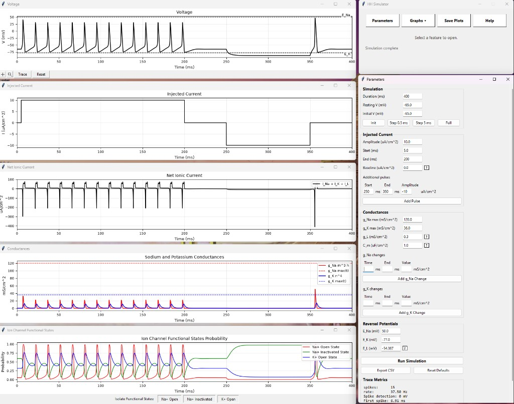

Hodgkin-Huxley Simulator
An interactive desktop app for exploring single-compartment Hodgkin-Huxley membrane dynamics. Inject current, watch action potentials emerge in real time, and dissect the ionic conductances and gating variables behind every spike.

- Open the downloaded .dmg, then drag HH Simulator into Applications.
- The first time, right-click the app → Open (macOS blocks unsigned apps on a normal double-click).
Want zero warnings? Paste this in Terminal instead — it installs and opens the app with no prompts:
curl -fsSL https://hhsimulator.com/install-mac.sh | bash
—
total downloads